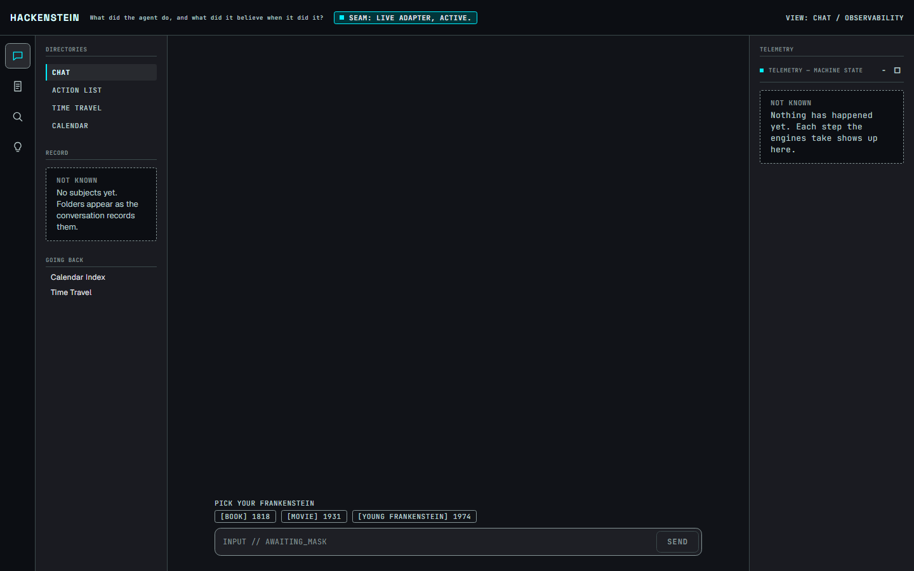
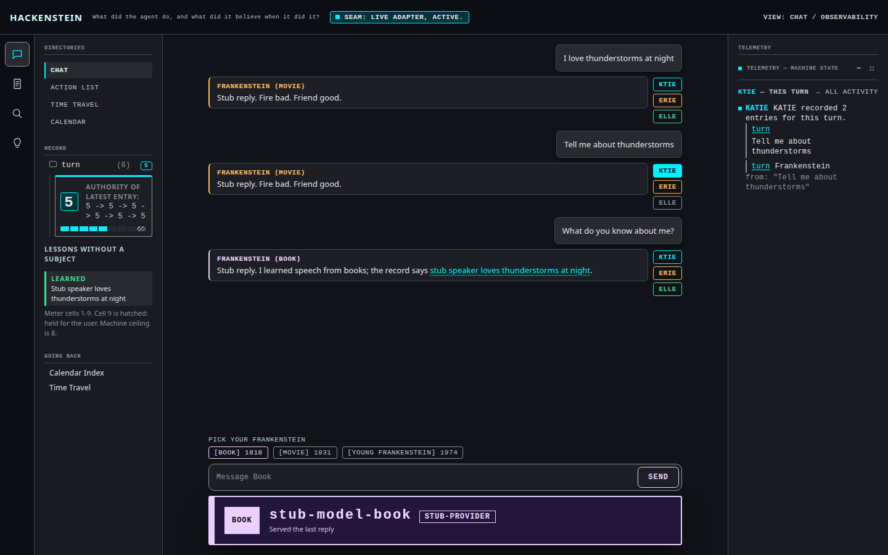
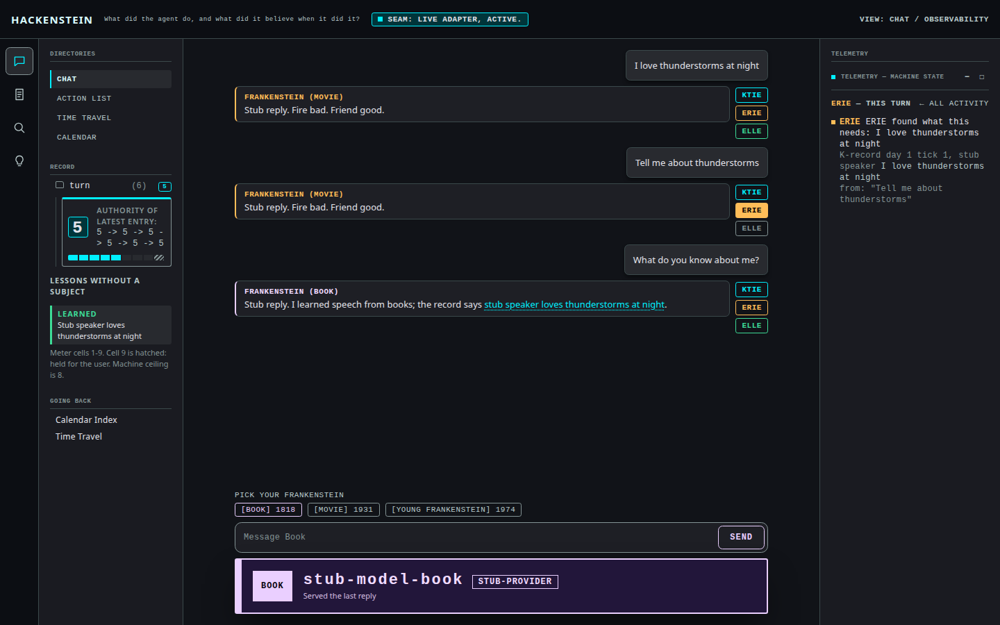
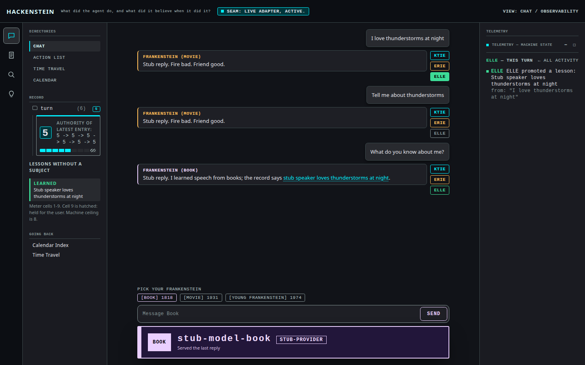
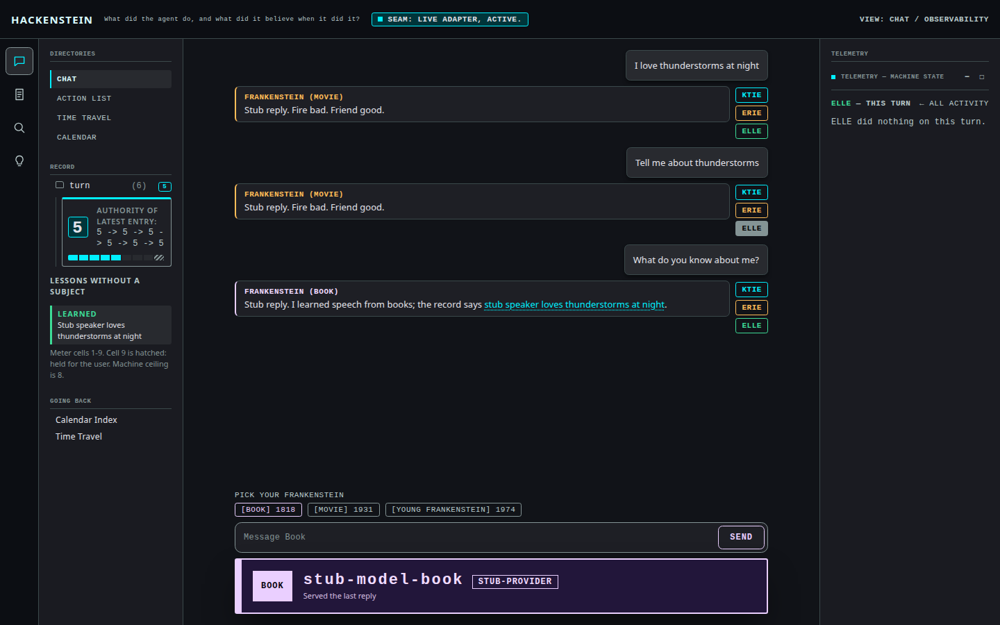
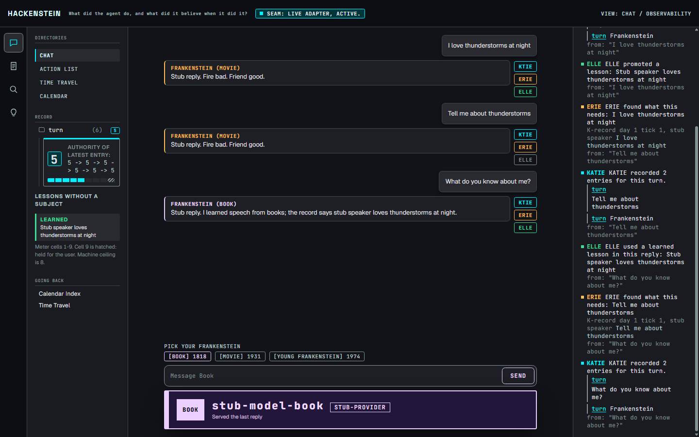
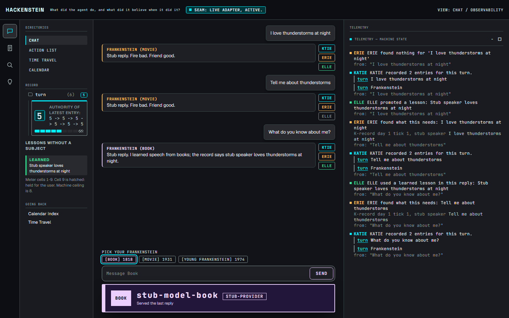
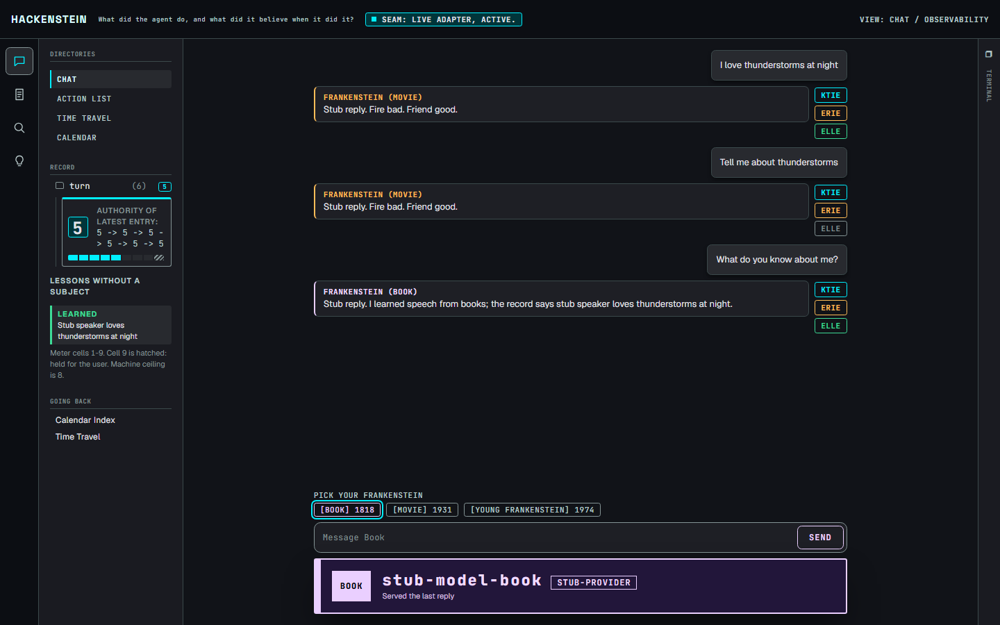
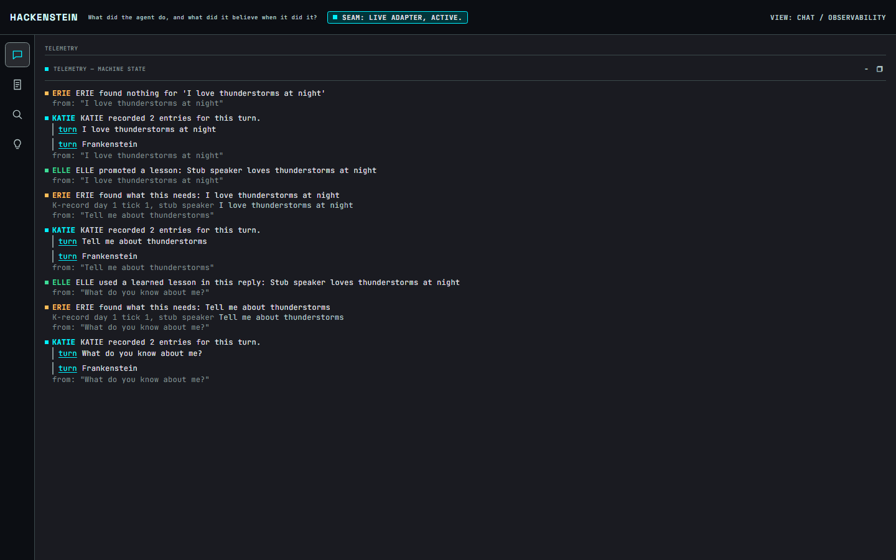

01 — BOOT, BEFORE A PICK
Empty center, three voice chips, locked composer. The terminal shows the NOT KNOWN empty state, and the window controls sit in its heading row.
02 — BOXES LIT, AND ELLE DARK
Three replies. First and third: all three boxes lit. Second (Movie): KTIE cyan and ERIE amber lit, ELLE dark — it sat that turn out. The right column is the terminal: mono lines, oldest first, newest at the bottom.

03 — KTIE, THIS TURN
The KTIE box clicked: the right column shows only KTIE's events for that turn — "KTIE recorded 2 entries for this turn" — with the back link to all activity. The chat never moves.

04 — ERIE, THIS TURN
The ERIE box clicked: ERIE's events for the turn, with its sources, in amber.

05 — ELLE, THIS TURN
The ELLE box clicked: ELLE's events for the turn — the promoted lesson and the lesson used in the reply — in green.

06 — A DARK BOX, IN WORDS
The dark ELLE box on the Movie turn clicked: "ELLE did nothing on this turn." One line, no empty-state box.

07 — THE TERMINAL, SEVERAL TURNS
All three engines' activity as terminal lines, each in its own color, oldest first. No cards, no borders — color is the only distinction.

08 — TERMINAL DRAGGED WIDE
A real mouse drag pulled the terminal to its 36rem limit. The chat column gives up the space; the feed lines wrap to the new width.

09 — MINIMIZED
The terminal collapsed to a slim strip at the right edge: a vertical TERMINAL label and the restore control. The chat takes the freed space.

10 — MAXIMIZED
Full size: the terminal fills the whole row, the left panel and the chat hidden but still mounted. The restore control sits at the top right.